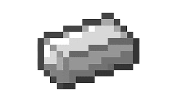

Ферма железа в Minecraft позволяет автоматически получать железные слитки, которые необходимы для крафта инструментов, брони, ведер, механизмов и других важных предметов. Для её работы используются железные големы, которые спаунятся и уничтожаются в специально построенных конструкциях. Железо – один из самых ценных ресурсов, и ферма значительно упрощает процесс его добычи, экономя время и усилия. Она позволяет игроку регулярно получать железо без необходимости искать пещеры или заниматься добычей вручную. Это особенно важно для игроков, активно использующих железо для крафта или создания редстоун-устройств.